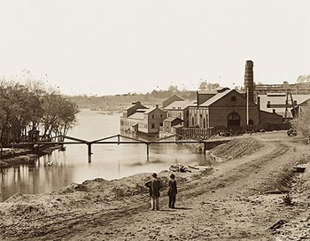
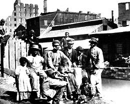

|
While slavery is almost universally thought of as--and, indeed, most commonly
was--a plantation phenomenon, it should not be forgotten that the antebellum
South had an urban dimension and that slaves, like other Southerners, lived in
the cities and towns as well as in the countryside. There they worked, formed
families, worshiped, and associated with other city residents of various color
and condition. And there their daily lives were almost as much affected by the
urban environment in which they lived as by the slave condition into which they
were born.
Among the many things that we do not know about slavery is the exact size of the
urban slave populations. Census takers were both casual and inconsistent in
their recording of the slave residents in the towns. Sometimes they apparently
recorded slaves living in urban places at the plantation residence of their
owners; sometimes they recorded slaves residing in the countryside at the town
residence of their owners; and often they would appear to have ignored slaves
who did not live on the property of their owners or hirers. The collection of
data is further complicated by the fact that the census data for many smaller
cities were not always separated from the county data. Nevertheless, once the
federal census began to be taken each decade, there are at least figures
available that are probably roughly indicative of the numbers of slaves living
in urban areas.
|

Slave labor was used extensively at Richmond's
famous Tredegar Iron Works.
|
The number of slaves residing in a given city at a particular time is a figure
of little importance or utility in determining the significance of that
component of the city's population. For instance, there were about a hundred
more slaves in Baltimore in 1850 than in 1800, but they constituted less than
one-fiftieth of the city's population in the later year as compared to more than
a tenth a half-century earlier. The figures given below, showing the relative
sizes of the slave components of the populations of these twenty cities, are, in
many respects, more revealing than the raw data.
Urban black populations did not have, even on the crudest bases, the same
demographic characteristics as the white populations or, in some instances, the
rural populations. For instance, both the free black and the slave components
were female-dominant while the white elements (both urban and rural) tended to
be male-dominant, as did the rural slave populations. An extreme example is
Baltimore in 1850, where the federal census of 1850 recorded 985 white females
to each 1,000 white males; the comparable figures for the free black and slave
components were 1,349 and 2,111, respectively. Moreover, the slave (and free
black) populations in the cities tended to contain smaller percentages of
children than the white element. Again, using Baltimore in 1850 as an example,
26 percent of the white, 24 percent of the free black, and 18 percent of the
slave populations were under ten years of age.
Slavery had, of course, existed in the Northern states--and, naturally, cities--
during the colonial and early national period. The Dutch West India Company had
imported slaves into New Amsterdam within a few years of its establishment.
Employed at first only for the benefit of the company, these blacks were soon
leased, and later sold, to private citizens, and the majority of them were soon
engaged in agricultural endeavors outside the town limits. The same patterns
developed in most of the other Northern English colonies; generally the
percentage of slaves was roughly the same in both the urban and the rural
populations. A notable exception was Massachusetts, where the Boston population
contained about four times the proportion of slaves as that in the colony as a
whole. In New York--perhaps because of the early practices of the company--slaves
were often hired by their owners to non-slaveholders. This practice was probably
common elsewhere, but there is less evidence in the other Northern towns.
Although slaves sometimes assisted skilled artisans (and doubtless in some cases
became accomplished craftsmen), they were mostly employed as carters, draymen,
coachmen, and especially house servants. In post-revolutionary New York the use
of slaves persisted not because they were cheaper to maintain (which they were
not) but primarily because of the prestige associated with the employment of
black personal servants. During the third of a century after the end of the
Revolution, as slavery was essentially eliminated from the area north of the
Mason-Dixon line, the tendency was for slaves in the urban areas to be
emancipated more rapidly than required by law. Slavery thus disappeared more
rapidly in the larger Northern cities than in the countryside. For example, in
1800 slaves constituted 6.2 percent of the population of New York State but only
4.74 percent of that of New York City. The comparable figures were 0.8 percent
in Pennsylvania and 0.13 percent in Philadelphia.
Although in 1800 the percentages of slaves in the populations of several of the
larger Southern cities (e.g., Charleston, Louisville, Richmond, Savannah, and
probably St. Louis) were greater than that in the state (or territorial)
population, by 1860 the reverse was true in each of the top ten cities. Indeed,
only in the populations of such smaller cities as Lexington, Kentucky, and New
Bern and Wilmington, North Carolina, did heavier proportions of slaves reside
than in the state populations as late as 1860. The reasons for this relative
decline in the urban slave populations is a matter of some dispute. Some would
argue, with Frederick Douglass, that slavery does not like a dense population
and that, ultimately, the decline of this inharmonious institution in the urban
environment was inevitable. Others might suggest that the heightened antislavery
agitation of the 1850s caused urban slaveholders to fear for the security of
their property, and perhaps of their persons, in an area where slaves could more
easily absorb the ideology and rhetoric associated with this agitation; they
consequently transferred their bondsmen (by sale or otherwise) to more rural
areas. Finally, the decline can be seen as simply the result of economic
conditions--the rapidly escalating prices paid for slaves represented a dramatic
increase in the demand for agricultural labor in the sixth decade of the
nineteenth century, which quite naturally pulled slaves out of the urban areas,
where their employment was no longer economically rewarding. In this respect, it
is notable that the only city in which the proportion of slaves in the
population remained relatively stable was Richmond, where more slaves were
employed in manufacturing activities than in any other of the twenty cities here
examined.

It was generally easier for urban slaves to
escape to freedom, given the great freedom of movement that they
were afforded. Such was the case with Frederick Douglass, who fled
from the city of Baltimore.
|
Many--perhaps even most--slaves worked for their owners, but in the cities slave
hiring was certainly more prevalent than it was in rural areas. Many urbanites,
including those of modest means, needed or wanted the labor that could most
easily be supplied by slaves but were either reluctant or unable to invest the
capital necessary to purchase bondsmen. Concomitantly, a fair number of urban
slaveholders owned more slaves than they could profitably employ in their homes
and business. Doubtless some of these individuals had purchased "excess" slaves
as an investment. Moreover, it was rather common for men of some wealth, when
distributing their property by will, to bequeath slaves to unmarried female
relatives because such property yielded a good and reliable return and required
little or no management. The circumstance that made slave property desirable as
either an investment or a legacy was the combination of the large and constant
demand for slave labor, coupled with the practices associated with slave hiring
that had developed in the cities in response to peculiarly urban conditions.
Slaves might be hired on any of several different contractual terms. The type of
hiring that best fitted the theoretical aspects of the slave system--and was
usually most satisfactory to slave owners--was an annual hiring contract. In this
case the hirer leased the slave for a year--as a practical matter, often for
fifty weeks from January--and assumed responsibility for the slave's food,
clothing, housing, and medical care, paying the owner a specified amount, either
in a lump sum or, more frequently, monthly. On that basis many urban residents
hired house servants; many hotels employed cooks, housemaids, and waiters; and
many manufacturing firms secured workers, both skilled and unskilled.
But much of the work to be done in cities did not demand or, indeed, permit
structuring by such long-term contracts. Many jobs required labor for only a
month, or ten days, or a week, or a day. While it was entirely possible for
slaveholders to make a large number of such short-term contracts, it was highly
inconvenient for them to do so. Consequently, the practice early developed of
permitting slaves to hire themselves in accordance with terms established by
their owner, returning the hiring fee to the master, usually at the end of each
day. Under these circumstances slaves might exercise one very slight element of
freedom--by manipulation and evasion they could, within very narrow limits, make
a choice of employers. The next deviant step in slave employment was more
revolutionary in nature. Masters and slaves alike testified to the fact that
slaves who had tasted the greater freedom of the urban environment almost always
sought, at whatever price or risk, to extend the area of control over their own
daily lives. "You couldn't pay me," said Charlotte, a Louisville slave, "to live
at home if I could help myself." Masters, in turn, frequently wished to shed
continuing daily responsibility for those of their slaves who were not serving
them directly, and for whom they had not negotiated annual hires. Consequently,
when slaves proposed new arrangements that served both the slaves' and the
owners' purposes, they frequently found their masters amenable to a change. More
and more urban slaves--though doubtless never more than a modest minority in any
city--thus assumed responsibility for providing their own food, clothing, and
housing, in return for making agreed-upon payments to their owners at specified
intervals. In this manner, these slaves achieved control of their employment
(within the limits of their abilities and skills) and their employer, choice of
residence (within the limits of their financial standing and the social mores of
their community), and freedom from constant oversight by their masters.
Slaves who "hired their own time" and "found for themselves" (and the former
term was normally used to embody the latter) might board with free black
families, or join with other slaves in similar circumstances to rent a house and
pool their food expenses, or rent separate quarters for themselves and their
families. No adequate data exist to establish the extent of such "living out,"
but it was far from uncommon. Joseph Bancroft, who compiled the 1848 Savannah
census, informed his readers that "the plan was adopted of enumerating the slave
population in their places of abode, without recourse to owners." This course of
action was decided upon, he said, because "under the system, so much in vogue at
the present time, of permitting this class of our population to live in streets
and lanes by themselves," such reports had "proved more reliable than ...
depending upon the owners for returns." In Charleston, moreover, the census of
1861 recorded literally hundreds of houses whose occupants were listed only as
"slaves," and many other instances of slaves and free blacks residing in the
same dwelling.
Under these circumstances skilled slaves could seek the most remunerative market
for their labor or the products of their labor, and slaves who were unskilled
might decide to engage in entrepreneurial activities rather than seeking
employment as common laborers. A slave might, for example, find it more
profitable to cook and sell food items, or to catch and sell fish, or to rent
(and perhaps eventually buy) a horse and cart and become a drayman. If their
entrepreneurial activities were successful they might even employ other slaves
to perform the services that they contracted to provide. While doubtless not
common, such circumstances were at least sufficiently prevalent to cause the
Charleston City Council to pass an ordinance regulating, but not prohibiting,
the hiring of slaves by other slaves. Such slaves--or, as they were sometimes
called, quasi-slaves or half-free blacks--had achieved a degree of independence
and self-determination wholly incompatible with the traditional image of
slavery.
For this degree of freedom, however, the slaves paid a price in addition to the
hire returned to their owners. Owners could, in some measure, shield their
slaves from the local authorities in the case of minor infractions, for Southern
officials were reluctant to interpose the authority of the state between the
master and the slave. Moreover, such slaves frequently resided in less healthful
quarters and consumed less nutritious diets than would have been provided by
their masters. A Washington observer wrote that their "place of repose is
generally a cellar, the dampness of which is favorable to the propagation of
contagion." It is worthy of note that between the 1820s and the middle of the
nineteenth century, when "living out" was on the rise, the death rate among
Baltimore's slaves rose from less than twenty per thousand to almost sixty per
thousand, while the death rates for whites remained steady and that for free
blacks probably declined slightly.
However employed--by their owners, by slave hirers, or by employers under terms
negotiated by themselves--urban slaves frequently followed occupational pursuits
radically different from those that were common on the plantations. Reliable and
detailed information about slave employment patterns in the cities is not
available, for neither federal census marshals nor directory compilers (those
great sources of occupational data for the free population) inquired about or
reported the jobs held by slaves. Still, visitors to the antebellum Southern
cities reported that blacks--they frequently did not know whether they were bond
or free--were highly visible in all the towns, both because of their absolute
numbers and because they followed many diverse occupations. These sources show
that blacks (and, probably, slaves) worked as factory operatives (especially in
the iron and tobacco establishments in Richmond and other Virginia cities),
carriage drivers, hotel servants, pastry cooks, market vendors, draymen,
porters, carpenters, bricklayers, and stevedores. But such data are
impressionistic and spotty. In 1848 local censuses were taken in Charleston and
Savannah that at least attempted to address the question of occupational
patterns. That of Savannah is almost useless in the matter of slave occupations,
reporting only that 83 of perhaps 1,400 adult male slaves followed non-menial
occupations--doubtless a gross understatement. The Charleston census is more
helpful, showing the occupations of almost 3,500 male and well over 3,800 female
slaves. Just under 90 percent of the women and rather more than half of the men
held personal service jobs--mostly as house servants--while another quarter of the
males and almost a tenth of the females performed unskilled labor. But almost a
sixth of the men were artisans; indeed, 40 of the 89 blacksmiths in the city
were slaves. Slave artisans were almost as numerous as white artisans in
Charleston. Although the slave employment pattern in that city in 1848 was not
representative of all cities in this region throughout the antebellum period,
these figures at least indicate the slave occupational diversity that existed in
the urban South.
Aside from the potential freedoms that the city might offer to some slaves in
residence, occupation, and owner oversight, there were some general freedoms
that urban conditions made available to all slaves, even those working as
servants in their master's house. One of these was the freedom to increase their
range of associations. For a great variety of reasons urban house servants
frequently left their owner's property, something that rarely happened in the
rural, plantation environment. Carriage drivers not only transported members of
the master's family to various places inside and outside the city, but were also
dispatched to get friends or to bring bulky items to the master's house. Maids
and other house servants went on a variety of errands, carrying messages and
obtaining smaller items from various shops. Cooks, butlers, and majordomos went
early every day to the markets to secure the provisions for the family's (and
the slaves') meals. Such peregrinations brought these slaves into contact with a
multitude of other blacks, slave and free, and opened to their view an
enormously more complex society. They saw black schools, though, with rare
exceptions before 1850 and almost none after that date, they could not attend
them. They encountered black social organizations, most, but not all, of which
were open only to free people of color. And they entered and were welcomed in
black churches, where they not only found both a congregation and an order of
worship more congenial to their desires and more attuned to their needs, but
where they could participate in the management and governance of an institution.
It was this widening of horizons in the urban setting that slaveholders found
particularly threatening and that influenced many masters to remove their
servants from this unsettling environment and send them back to their
plantations.
|

These slaves continued to toil in the Confederate capital
until they were freed by Union armies in 1865.
|
Another gift of the city to the slave was anonymity. On the plantation or the
farm or in small towns the slaves were known and were, therefore, in some
measure accountable to every white that they met; they were under constant
surveillance. But in the cities, though they might be almost constantly
observed, actual surveillance scarcely existed because they were not, with rare
exceptions, known as individuals. They were submerged in the mass of hundreds
or, on occasion, thousands of blacks, slave and free, and because their names
and those of their masters and, indeed, their slave status were unknown to more
than a handful of whites, they had achieved without personal effort a
significant degree of practical freedom. Consequently, the pass system of the
plantation South, which was designed to limit the movement of slaves off their
owners' property, utterly collapsed in the cities. The closest that the urban
societies could come to regulating slave movement was the imposition of curfews
that were applicable only to blacks. These laws required that blacks be off the
streets by a specified time, but although slaves were constantly seized for
curfew violations, they could be, and often were, off their masters' property
but still not in violation of curfew regulations if they were in the houses of
other slaves or free blacks or in their own lodgings.
Other restraints imposed by ordinance reflected the collective will of white
society to define permissible slave conduct. Some of these restraints applied to
all blacks, some only to slaves. They were excluded from some parks or public
grounds unless attending whites. They were prohibited from smoking cigars in
public or carrying canes or purchasing liquor or selling farm produce. They
could not gather in groups at night without the permission of the city
government. They had to inform city officials of their place of residence and to
be licensed if they hired their own time. They were required to assist in
fighting fires and excluded from the vicinity of fires if they were not actively
engaged in firefighting under white direction. Many of these ordinances were
enforced only intermittently and, even then, inadequately, for the police and
constabulary were few, largely untrained, usually corrupt, and almost always
incompetent.
Punishments meted out to urban slaves were generally less severe than on the
plantations. Slaves were flogged by their masters and mistresses in town as well
as in the countryside, and travelers commented with disgust upon the spectacle
of whites brutally beating their bondsmen and women in their houses, in their
yards, and occasionally on the streets. But for the very reason that such
punishments attracted attention (and, often, condemnation), many masters were
reluctant to apply the lash with the same degree of frequency and lack of
concern as on the plantation. Here, as in many other areas of human activity,
the cities provided institutional answers to problems dealt with in a more
individual fashion in the rural regions. Slave owners might send their slaves to
the city jail to be flogged or, on rare occasions, incarcerated. When urban
masters proved somewhat reluctant to avail themselves of these services,
authorities in Charleston, at least, bowed to their scruples and constructed a
treadmill to provide non-corporal punishments to slaves of tender-hearted owners.
The local press asserted that slaves hated the treadmill worse than the lash and
voiced the hope that more masters of lazy and impudent bondsmen would make use
of this public facility. For infractions of city ordinances, slaves were almost
universally flogged unless their fines were paid by their owners; a few cities
recognized realities by specifically providing that slaves might pay their own
fines.
Thus, at that point where the institution of slavery and the multiple
institutions that comprised nineteenth-century urbanism intersected, each
institution was in some measure changed by the other. The most extensive
modification, however, occurred in slavery as it reshaped itself to conform to
the needs, demands, and opportunities of the urban environment. Slaves broadened
their range of experiences, associated with a greater diversity of individuals
and institutions, and formed new and different work practices and living
circumstances. In the process many slaves acquired a greater measure of control
over their own lives and took steps in the direction of freedom. Indeed, they
became more nearly free. Whether these modifications of the generally accepted
patterns of slave life represented the slow death of the South's peculiar
institution in the urban environment or testified to the durability and
flexibility of that institution, which enabled it to survive in and adapt to the
least promising of circumstances, is a question the answer to which depends
largely on one's own personal assessment. The reality of the change, and perhaps
even its magnitude, are unquestionable.
Source: Randall M. Miller and John David Smith, eds. Dictionary of
Afro-American Slavery (Westport, CT: Praeger, 1997), 763-73.
|